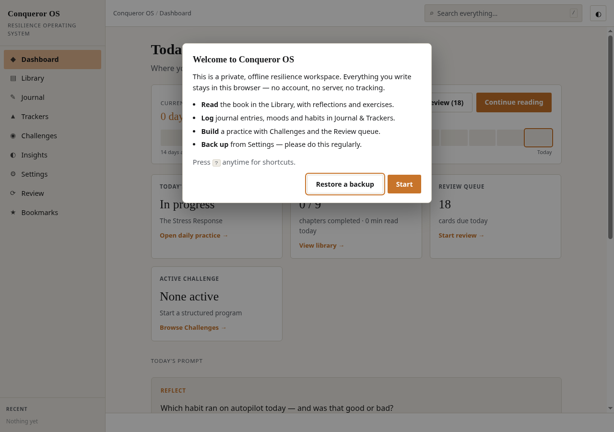
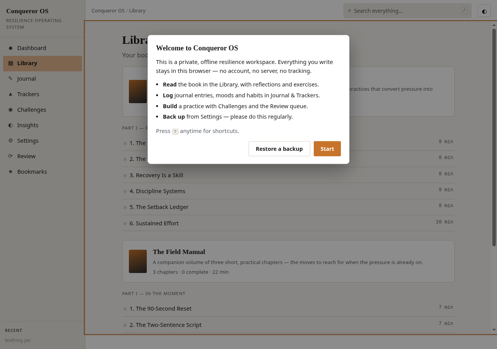
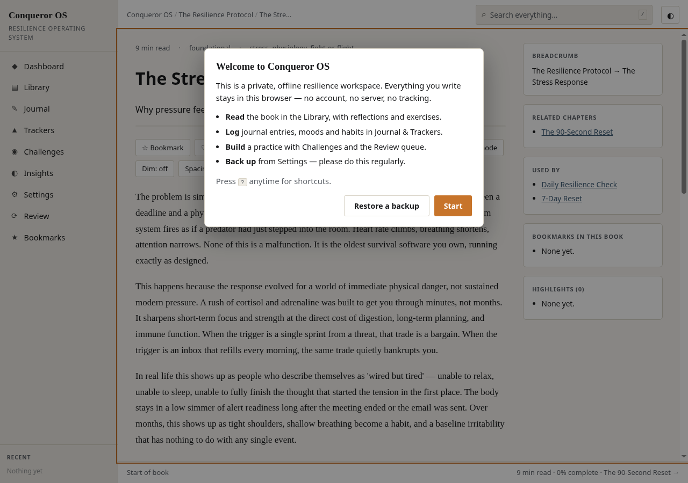

Reading system
A multi-book library with parts and chapters, and a reader built for study.
- Inline highlights in amber / blue / green with notes
- Bookmarks, favourite quotes, focus mode, read-aloud
- Inline SVG diagrams and dwell-time tracking


// Discipline engine · v3.1.0
A private, offline resilience workspace that lives in a single HTML file. Read, reflect, journal, track and review — no server, no account, no build step required to run it.
Free & fully offline — nothing to install. The Android .apk is sideload-only (allow installs from unknown sources).
// What it does
Six systems in one file. Everything works offline and stores to your own device — the app makes no network requests after it loads.
A multi-book library with parts and chapters, and a reader built for study.
Six entry types with tags, filters, dictation and image attachments.
Built-in and custom trackers with real local-only analytics.
Structured programs plus spaced repetition so lessons stick.
Fillable sheets with saved history, plus a graph of what connects to what.
Your data stays on your device — and you can always get it out.
// How it works
No install, no sign-up. Open the file and the whole workspace is there.
Run it online, or download the single file and open it directly in a browser tab.
Work through the library, highlight, take notes and journal each session.
Log trackers, run a 7/21/30-day challenge and keep the streak alive.
Clear the spaced-repetition queue and export an encrypted backup.
// Demo
The full application is served straight from this repository. Nothing to install — the demo is the product.



// Get started
Use it online, keep the file for yourself, or build it from source.
Open the live demo and start working. Your data is saved in your browser on your device.
Open the appDownload the built single-file app and open it straight from disk — works from a USB stick, email or intranet share.
Download the HTML file# clone git clone https://github.com/drsamonline/conqueror-os.git cd conqueror-os # serve locally (optional) npm run serve # http://localhost:8080 # build the minified single file -> dist/conqueror-os.html npm install && npm run build # run the smoke suite (30 checks) npm test
// FAQ
connect-src 'none'. There is no analytics, telemetry or tracking.file://, a USB stick, a static host or an intranet share. An optional service worker for installable use when served over HTTP is on the roadmap.localStorage on your device only, with IndexedDB used for image attachments. Storage is bounded by the browser's quota (roughly 5 MB); the app shows a usage meter and warns as it fills.